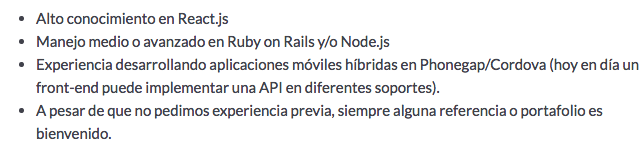

EL JAVASCRIPTO
Y el lado oscuro de la fuerza
Como aprender frontend y no morir en el intento
@fforresAutobombo
- Felipe Torres
- twitter/@fforres
- Noders - JS Chile
- I <3 teach
Netscape - 10 Días
Front End Development
Aprender Front End es terrible
(No tanto como Vader)Industria
y
Comunidad
Pega 1
Pega 2
Pega 3 y 4
¯\_(ツ)_/¯
Comunidades
¯\_(ツ)_/¯
¿Cómo aprendemos frontend sin morir en el intento?
Disclaimer**
Groupon - Noders - NodeJS (Slack) - NodeSchool (Github) - JavaScript (Reddit) - learncode.academy - Bootcamps (CoderHouse / WorldTechMakers) - Platzi - CodeSchool - egghead.io - frontend masters - coursera - Experiencia y Meetups
Frontend 101
jQuery <3
Eso
FrontEnd 102
bit.ly/fe_
CSS TOOLS
Herramientas para construir
Frameworks de JavaScript
Relevant XKCD

FrontEnd 103?
Ser un n00b